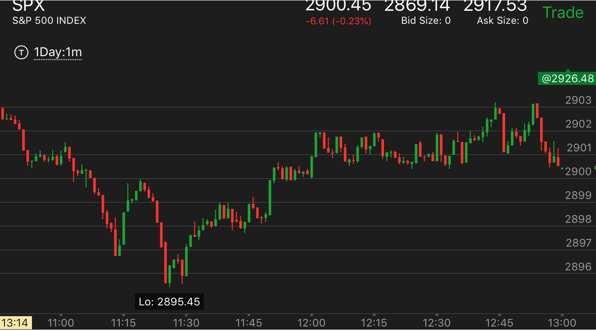
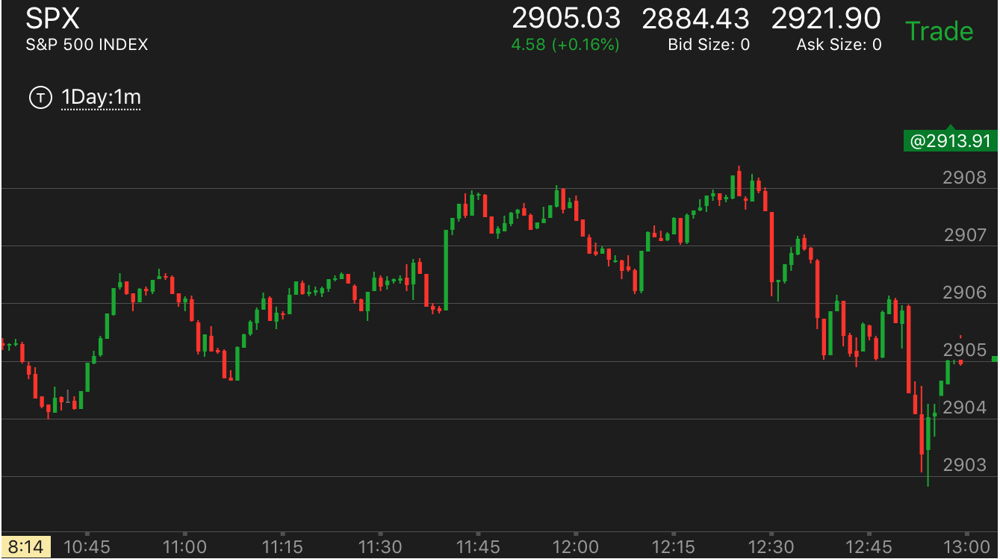

确定性的趋势末期，回调不到位，出现双底双顶走势
- 这个点通常只有3，4分钟，但是足够引发一个大的转折走势。如果错过了开始，也要去追赶。也有时间比较长的。关键在于回调很小。没有填补真空。
- 这个一定要是走势已经涨了一段时间，或者跌了一段时间，如果刚刚开始，不能用这个走势。
- 要注意转折的时候，它不能填补了真空。而是远远小于真空。不然就不是这个走势了。而是会继续运动。通常会很明显，不会模棱两可
底部的狭窄双底反弹。
顶部的双顶走势
底部的狭窄双底反弹。
TOP

图示：11:10下跌，立刻反弹，不能算。而11：25的下跌。反弹很小。又回来了。这样就是一个底部了。可以立刻做多。
可以看到它反弹不大就要回来的时候，在原来的低点放个单子去做多。
顶部的双顶走势
TOP

图示：上涨一段时间后，11：40出现快速大涨。但是它后面还跟了几个小的上涨。说明这个走势本身不是顶部。
然而，它回调很小，再次上涨。回到高点后，形成了双顶走势。这个其实就表示要跌了。它下跌速度很慢。但是，应该大跌。但是它又再次拉回。创了新高。
似乎还要涨。但是其实这个新高不是有效的新高。时间短，幅度小。应该还属于前面的双顶的范围。然后大跌。